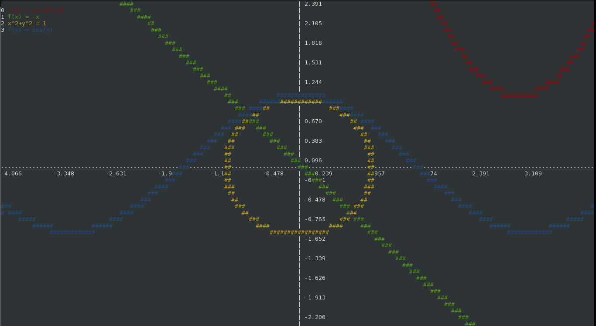

Terminal-based mathematical function plotter
Terminal-based mathematical function plotter
First you have to clone the repository
git clone https://github.com/gciruelos/termplot.git
cd termplot
Now build and run
make
./termplot
Termplot supports vim-like commands, so you can type
:plot sin(x^2)
And it will work. Termplot can also plot implicit functions, like
:plot x^2+y^2 = 1
